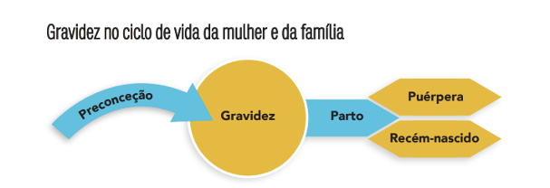

HL7 PT FHIR Implementation Guide: Noticia de Nascimento, published by HL7 Portugal. This guide is not an authorized publication; it is the continuous build for version 0.0.1 built by the FHIR (HL7® FHIR® Standard) CI Build. This version is based on the current content of https://github.com/hl7-pt/obs-neonat-ig/tree/master and changes regularly. See the Directory of published versions
Análise Funcional
A gravidez tem um conjunto de etapas funcionais associadas como descrita na imagem abaixo:

Etapa 1 - Preconceção
Consulta pré-concecional realizada em centro de saúde habitualmente (depende dos fatores de risco da grávida). Esta consulta deve ser realizada antes de parar a contraceção e deve ser programada uma consulta subsequente para avaliação dos resultados dos exames realizados e das intervenções propostas.
-
História clínica: determinar estado geral de saúde da mulher/casal e respetivos antecedentes pessoais e familiares;
-
Avaliação física:
- peso e altura / índice de massa corporal
- pressão arterial (PA)
- exame mamário
- exame ginecológico (atenção à genitália externa para deteção de situações de mutilação genital feminina);
- Avaliação laboratorial:
- determinar grupo sanguíneo e fator RhD
- hemograma
- glicémia jejum
- rastreio das hemoglobinopatias
- rastreio da sífilis, hepatite B (vacinação, se aplicável), VIH
- Serologias da Rubéola (com respetiva vacinação, se aplicável), Toxoplamose e Citomegalovirus (se aplicável);
- Rastreio do cancro do colo do útero, se não foi efetuado há menos de 3 anos;
- Avaliação do estado vacinal e atualização do PNV (prioridade na vacinação contra o tétano, a difteria, a rubéola e o sarampo);
- Avaliação do estado nutricional, peso adequado e distúrbios do comportamento alimentar;
- Avaliação do consumo de tabaco, álcool e outras SPA (substâncias psicoativas);
- Avaliação de fatores de risco social, tais como pobreza, imigração, desemprego, refugiados, condições habitacionais precárias;
- Rastreio da violência nas relações de intimidade através de perguntas tipo, como: “Existem conflitos familiares que a estejam a preocupar? Tem tido problemas de relacionamento com o seu companheiro? Sente-se segura na sua relação?”;
- Avaliação de fatores de risco familiares / contextos de vida;
- Preenchimento do BSR/PF – Boletim de Saúde Reprodutiva/Planeamento Familiar.
Etapa 2 – Gravidez
O esquema de vigilância e conduta durante a gravidez dependem da existência ou não de patologia. Por isso pode ser estabelecido um esquema comum para todas as grávidas numa gravidez de baixo risco. A identificação de um factor de risco ou de uma situação anómala determina a atuação subsequente. Considera-se gravidez de baixo risco aquela em que não é possível identificar, após avaliação clínica de acordo com a avaliação do risco pré-natal baseada na escala de Goodwin modificada, nenhum fator acrescido de morbilidade materna, fetal e/ou neonatal. O risco, sendo dinâmico ao longo da gravidez, deve ser reavaliado em todas as consultas.
Idade gestacional
Definição da idade gestacional Idade gestacional cronológica: definida a partir da data da última menstruação. Deve depois ser revista com os dados da ecografia do 1º Trimestre (11-13 semanas e 6 dias).
Idade gestacional definitiva (cronológica ou corrigida por ecografia do 1º T): definida pelo comprimento crânio-caudal, na ecografia das 11-13 semanas e seis dias. Quando o cálculo da idade gestacional é feito desta forma, mantém-se inalterável ao longo de toda a gravidez.
Na gravidez de baixo risco preconiza-se:
- Realizar a 1ª consulta, o mais precocemente possível e até às 12 semanas de gravidez (1ºT de gravidez);
- Realizar as consultas de vigilância pré-natal, após a 1ª consulta:
- a cada 4-6 semanas até às 30 semanas;
- a cada 2-3 semanas entre as 30 e as 36 semanas;
- a cada 1-2 semanas após as 36 semanas até ao parto.
Todas as grávidas, entre as 36 e as 40 semanas, devem ter acesso a uma consulta no hospital onde se prevê que venha a ocorrer o parto.
O esquema e periodicidade das consultas pré-natais assim definidos podem ser acrescidos, tendo em conta: os dados da avaliação clínica e os resultados dos exames complementares realizados; as necessidades de cada mulher/casal; os protocolos de cada Unidade Coordenadora Funcional, sem prejuízo do definido no ponto anterior. Quando a grávida entra em contacto com os serviços de saúde tardiamente, deverá realizar os exames/rastreios preconizados para a 1ª consulta de gravidez (até às 12 semanas), com exceção dos exames que já não sejam possíveis realizar atendendo à idade gestacional.
Avaliação da adaptação à gravidez, saúde mental e fatores psicossociais:
- Avaliar o risco psicossocial e estruturar intervenções individuais à medida de cada grávida/casal/família;
- Encorajar as grávidas/casal/famílias a falar sobre quaisquer alterações do estado emocional (humor, perceção, pensamento) e dos comportamentos que considerem que saem fora do padrão habitual;
- Promover e desenvolver fatores protetores da saúde mental na gravidez e na primeira infância, intervindo precocemente nas situações identificadas como problemáticas mantendo um contacto próximo e um conhecimento atualizado;
- Referenciar para consultas de saúde mental/psicologia a grávida e/ou companheiro que apresentem sintomas inequívocos de depressão;
- Avaliação do estado nutricional;
- Avaliação da progressão ponderal:
- Avaliar peso e altura;
- Aconselhar sobre o ganho de peso adequado durante a gravidez (tabela 3).
- Rastreios analíticos contemplados ao longo da gravidez;
- Rastreios ecográficos contemplados ao longo da gravidez;
- Avaliação do consumo de substâncias nocivas como tabaco, álcool e outras substâncias psicoativas;
- Questionar sobre a ingestão de fármacos e medicamentos de venda livre;
- Suplementação durante a gravidez (iodo, ácido fólico, ferro).
- Avaliação do estado vacinal.
- Profilaxia da isoimunização nas grávidas Rh D negativas:
- Disponibilizar a imunoglobulina anti-D (300 µg) a todas as grávidas RhD negativas não sensibilizadas, às 28 semanas de gestação;
- Rastreio da neoplasia do colo uterino, se aplicável.
- Rastreio da violência doméstica (VD):
- Realizar o rastreio da VD, na primeira consulta pré-natal e em todas as consultas subsequentes;
- Detetar sinais e sintomas sugestivos da existência de violência;
- Intervir e acompanhar a vítima de VD, durante a gravidez.
- Rastreio de grávidas com mutilação genital feminina (MGF):
- Identificar grávidas vítimas de mutilação genital feminina;
- Detetar o tipo de MGF e as suas repercussões para a grávida;
- Orientar a grávida com mutilação e a sua família, no sentido de prevenir a sua realização na criança que vai nascer (sexo feminino) e de outras raparigas da família.
Etapa 3 – Parto
O momento do parto é um processo complexo e muito significativo tanto para a mãe quanto para o bebé. Durante este período, são recolhidos dados e realizadas avaliações relativas ao bem-estar materno e fetal:
- Parto/Expulsão: Tipo de parto, apresentação do feto, início do trabalho de parto, aceleração ocitócica, antibioterapia intraparto, febre materna.
- Monitorização fetal: Cardiotocografia
- Trabalho de parto: Estratégias não farmacológicas para controlo da dor, posições adotadas durante o trabalho de parto, duração do período expulsivo, avaliação rotura da bolsa amniótica e líquido amniótico.
- Recém nascido e amamentação: Estado, sexo, peso, comprimento, perímetro cefálico, índice Apgar, Utilização de suporte de O2 e reanimação, malformações visíveis no recém-nascido, eliminação urinária e intestinal, contacto pele a pele, amamentação na 1ª hora de vida, resposta adequada à amamentação, avaliação física das mamas e mamilos, avaliação da dor.
- Dequitadura: Tipo de dequitadura, mecanismo de descolamento, peso da placenta, alterações da placenta.
- Cordão umbilical: Tempo até à laqueação do cordão, comprimento do cordão, número de vasos, número de circulares, inserção do cordão, colheita do cordão umbilical.
- Analgesia: Tipo de analgesia, complicações da analgesia.
- Intervenções: Episiotomia, laceração, distócia de ombros, entre outros procedimentos.
Etapa 4.1 – Berçário
Após o nascimento, o recém-nascido é encaminhado para o berçário, onde são realizados os primeiros cuidados essenciais. Este espaço é preparado para garantir um ambiente seguro e higiénico, adequado às necessidades do bebé.
No berçário, o pediatra realiza uma série de exames e avaliações para assegurar a saúde e o bem-estar do recém-nascido. Estas incluem:
- Análise das medidas antropométricas:
- Peso
- Comprimento
- Perímetro cefálico
- Exame Físico Completo:
- Auscultação Cardíaca e Pulmonar: Verificação dos sons cardíacos e pulmonares para identificar murmúrios cardíacos, ritmo respiratório e outros sinais.
- Avaliação Abdominal: Palpação do abdómen para identificar anomalias.
- Inspeção da Pele: Avaliação da cor da pele (icterícia, cianose) e identificação de manchas ou sinais de infeções.
- Avaliação Neurológica: Testes de reflexos primitivos (reflexo de Moro, de sucção, de preensão palmar e plantar).
Exame dos Olhos: Verificação de reflexos pupilares e anomalias oculares.
- Testes Preventivos e Profiláticos:
- Administração de Vitamina K: Para prevenir a doença hemorrágica do recém-nascido.
- Profilaxia Ocular: Aplicação de colírio antibiótico para prevenir infeções oculares.
- Vacinação, de acordo com Plano Nacional de Vacinação
- Avaliação da Alimentação e do Estado de Hidratação:
- Observação das primeiras tentativas de amamentação.
- Verificação da sucção e da deglutição.
- Triagem Neonatal:
- Colheita de sangue para o teste do pezinho, que rastreia várias doenças metabólicas, genéticas e endócrinas.
Etapa 4.2 – Puerpério
Puerpério é o período de recuperação física e psicológica da mãe que começa imediatamente a seguir ao nascimento do(s) recém-nascido(s) e se prolonga por 6 semanas pós-parto (42 dias).
No puerpério que decorra sem complicações ou desvios da normalidade preconiza-se:
Uma consulta a realizar entre a 4ª e a 6ª semanas após o parto;
Deve ser consagrada uma consulta no puerpério precoce (até ao 15º dia pós-parto) em puérperas com determinadas situações:
Extremos da idade reprodutiva;
Necessitem de avaliação de ferida cirúrgica e eventual remoção de material de sutura;
Dificuldades no estabelecimento e manutenção do aleitamento materno;
Sinalizadas pelo hospital e/ou no âmbito dos protocolos da UCF.
Noticia de nascimento e alta
O processo de preenchimento do formulário eletrónico referente à "Notícia de Nascimento" é desempenhado por diversos profissionais de saúde e só após o seu completo preenchimento é possível a progenitora e o recém-nascido terem alta hospitalar.
De acordo com a Norma nº 013/2015 de 01/07/2015 da Direção-Geral da Saúde, são necessárias as seguintes informações sobre a Mãe, sobre o Parto e o Recém-nascido e informações administrativas:
Informações sobre a Mãe:
- Nome completo
- Data de nascimento
- Morada
- Naturalidade e nacionalidade
- Número de telefone
- Detalhes da gravidez:
- Tipo (simples ou múltipla)
- Número de gémeos (se aplicável)
- Idade gestacional (em semanas e dias)
- Risco da gravidez e motivo
- Administração de imunoglobulina anti-D e data (se aplicável)
- Cumprimento do esquema de vigilância pré-natal (ecografias e análises realizadas)
- Intercorrências durante a gravidez
- Tipo de seguimento após o nascimento (Cuidados de Saúde Primários, hospital, obstetra privado, etc.)
Informações sobre o Parto:
- Data do parto
- Tipo de parto (vaginal, cesariana, etc.)
- Motivo em caso de distocia (complicações no parto)
- Profissional que assistiu o parto (médico, enfermeira obstetra, etc.)
- Estado do puerpério até à alta (normal ou patológico)
Informações sobre o Recém-Nascido:
- Estado ao nascer (nado vivo, feto morto, falecido, etc.)
- Sexo
- Comprimento (em cm)
- Peso ao nascer (em gramas)
- Perímetro cefálico (em cm)
- Índice de Apgar ao 1º, 5º e 10º minuto
- Necessidade de reanimação (sim ou não)
- Internamento em unidades de cuidados intensivos ou intermédios (motivo)
- Fototerapia (se realizada)
- Presença de malformações
- Resultados de rastreios (doenças metabólicas, auditivo neonatal)
- Vacinas administradas (BCG, Hepatite B, etc.)
- Aleitamento até à alta hospitalar
- Avaliação de risco (fatores de risco individual, familiar, socioeconómico)
- Consulta de seguimento hospitalar marcada (se aplicável)
Informações Administrativas:
- Identificação da Unidade de Saúde dos Cuidados de Saúde Primários (UCSP/USF) e Agrupamento de Centros de Saúde (ACES)
- Número de utente
- Nome do médico e enfermeiro de família
- Data de preenchimento da notícia de nascimento
Todas estas informações são essenciais para o acompanhamento do recém-nascido e são essenciais para um acompanhamento de proximidade por parte das unidades de saúde locais. Os dados são preenchidos pelos obstetras responsáveis pela realização do parto, enfermeiros destacados e pessoal administrativo auxiliar da instituição onde foi realizado o parto. Para a atribuição da alta hospitalar tanto ao progenitor como ao recém-nascido é essencial que toda a informação obrigatório do processo da "Notícia de Nascimento" esteja preenchida corretamente.
Noticia Nascimento - enquadramento legal
Ao abrigo do projeto de inovação digital e simplificação dos processos de saúde em Portugal,
“Simplex Saúde Infantil e Juvenil”, foram implementados dois projetos auxiliares que incidem
sobre o registro de recém-nascidos e introdução de novos utentes no Serviço Nacional de
Saúde (SNS). Desta forma, foram desenvolvidos os projetos “Notícia Nascimento” e “Nascer
Utente”, sendo o primeiro referente ao processo de registo eletrónico de um nascimento em
formulário próprio melhorando a comunicação de dados entre os Cuidados de Saúde
Hospitalares e os Cuidados de Saúde Primários. O projeto “Nascer Utente” está dependente do
anterior, sendo que este permite que tosos os recém-nascidos passem a ter um médico de
família associado. A inscrição do recém-nascido é automática e imediata no Registo Nacional
de Utentes (RNU), procedendo-se à atribuição do respetivo número de utente, a constar do
Cartão de Cidadão, e de médico de família.